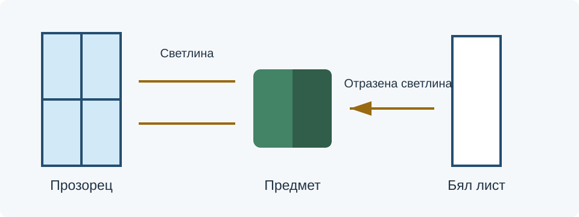

За какво е този урок?
Ще направите три сравнения „преди/след“, като променяте светлина, фон и конкретен детайл поотделно.
Четете обясненията, изпробвайте действията и запазвайте работата си. Отворените въпроси показват примерен отговор след предаване. При собствена тема са възможни различни обосновани решения.
Посока на светлината и прост отражател
Посока и характер на светлината
Поредицата свързва заснемане на снимки, светлина, подбор, подготовка за уеб, видеозаснемане, сценарий и монтаж. Използвайте достъпен предмет или клубна дейност. Пазете оригиналите и работните проекти в своя папка; в мисията предавайте точно посочения резултат. Ако започвате оттук, заснемете нужните кадри за избраната тема — не е необходим чужд готов проект.
Светлината определя кои части на обекта се виждат и как се усещат формата и текстурата. Започнете с наблюдение: откъде идва, кои части са най-светли и къде попадат сенките?
- Светлина отпред: детайлите могат да се виждат ясно, но формата понякога изглежда по-плоска.
- Странична светлина: сенките подчертават обема и повърхността.
- Светлина отзад: яркият фон може да остави обекта тъмен. Това може да е търсен силует, но не е подходящо, ако трябва да се виждат детайлите.
Силното пряко слънце или малък ярък източник често създава отчетливи сенки. Светлина от голяма светла област, например прозорец без пряко слънце, обикновено е по-мека. Променете мястото или часа, когато това е възможно.
Прост опит с прозорец и бял лист
Поставете предмет близо до прозорец със светлина отстрани. Направете снимка. После поставете чист бял лист или картон от сенчестата страна и сравнете резултата.

Целта е да се виждат детайли и в сенчестата част, като формата остане различима. Проверете и най-светлите области: ако изглеждат напълно бели без текстура, променете осветяването или експозицията.
Ако цветовете изглеждат неестествени, огледайте източниците. Смес от дневна светлина и различно оцветени лампи може да даде различни оттенъци в отделните части на кадъра.
Фон, отражения и проверка на детайла
Какво има зад основния обект?
Фонът може да обяснява средата, но може и да отвлича вниманието. Проверете ярките петна, надписите, кабелите и предметите около обекта.
- Преместете се леко встрани, за да избегнете линия или предмет, който сякаш „излиза“ от главата на човек.
- Сравнете по-спокоен фон със сложния първоначален.
- Оставете само предметите, които помагат на посланието.
- Проверете отраженията в стъкло, огледало и лъскави повърхности.
- Не премахвайте важна част от средата само защото е по-лесно — решението трябва да съответства на темата.
За снимка на изработен предмет чиста маса може да е подходяща. За снимка на клубна дейност част от работното пространство може да дава необходим контекст.
Проверка преди втория кадър
- Обектив: проверете за замърсяване и отпечатъци.
- Фокус: уверете се, че важната част е ясна; при телефон докосването на обекта често задава фокус.
- Краища: огледайте отрязани пръсти, части от предмети и случайни фрагменти.
- Сенки: вижте дали вашата сянка или сянката на телефона не покрива обекта.
- Отражения: проверете какво допълнително се вижда в лъскавите повърхности.
- Хоризонт и вертикали: преценете дали наклонът е търсен или случаен.
Разгледайте снимката увеличена, а не само като малка миниатюра. Ако проблемът може да се реши на място, направете повторен кадър.
Три двойки за сравнение
Практическа задача: три двойки снимки
Използвайте предмет или място от урок 28. Работете с един и същ основен обект, за да сравнявате конкретните промени.
- Светлина: направете първи кадър, после променете посоката на светлината или добавете бял отражател. Направете втори.
- Фон: снимайте с първоначалния фон. После променете позицията или подредбата и снимайте отново.
- Детайл: открийте конкретен проблем — отражение, сянка, отрязана част или наклон. Поправете го и повторете.
- За всяка двойка запишете: „Проблем → промяна → видим резултат“.
- Покажете най-ясната двойка на съученик и сравнете наблюденията си.
Променяйте по един основен фактор между двата кадъра. Иначе е трудно да обясните кое действие е довело до подобрението.
Резултат: три двойки снимки и кратки бележки за промените. Запазете кадрите за подбора в следващия урок.
Прочетете още
National Museums Scotland — осветяване и фотографиране на предмети (на английски). За композицията прегледайте урок 28.
Запазете трите опита и предайте най-ясната двойка
- Изберете един и същ основен предмет. Подгответе три двойки: светлина, фон и поправен детайл. Ако нямате предишни снимки, заснемете първоначалните варианти сега.
- Именувайте 29-light-before/after, 29-background-before/after и 29-detail-before/after с действителните разширения. При всяка двойка променяйте само един основен фактор.
- За всяка двойка запишете „Проблем → действие → видим резултат“. Изберете тази, която най-ясно показва ефекта.
- Копирайте избраните два кадъра в нова папка, добавете
notes.txtс името на двойката и краткото обяснение. При нужда създайте малки JPEG копия по указанията по-долу; пазете всичките шест оригинала отделно. - В Windows изберете папката → десен бутон → Compress to ZIP file/Компресиране в ZIP; в други системи използвайте съответната команда за ZIP. Запазете като
29-comparison.zip. Разархивирайте за проба и отворете двете снимки.
За малко копие за преглед: отворете снимката в GIMP с File → Open; Image → Scale Image със свързани ширина и височина; намалете по-дългата страна до 1600 px, ако е по-голяма. File → Export As → ново име с .jpg, качество около 85; отворете експорта и проверете детайлите. В Photopea: File → Open, Image → Image Size със запазени пропорции, File → Export As → JPG. Това е копие за предаване; оригиналът остава отделно. GIMP: мащабиране · JPEG експорт.
Самопроверка
Какво промени резултата?
Пример: „В before сенчестата страна на чашата е тъмна. Добавих бял картон от тази страна, без да местя камерата. В after се вижда текстурата, а формата остава различима.“ Проверете дали описвате наблюдаем резултат, а не само „по-хубаво“. Допустими са други конкретни опити.
Винаги ли силуетът е грешка?
Подходяща е, ако целта е разпознаваем силует. Ако трябва да се виждат текстура или лице, а те са тъмни, сменете позиция/осветяване или добавете отражател. Решението следва целта, не универсална забрана.
Защо само една промяна?
По-лесно свързваме резултата с конкретното действие. Ако сменим едновременно фон, позиция и светлина, не знаем кое е подобрило кадъра. При следващ опит можем да проверим отделно втория фактор.
Какво да запомним?
- Посоката и характерът на светлината променят видимите детайли.
- Белият лист може да върне светлина към сенките.
- Фонът трябва да помага на посланието.
- Проверяваме фокус, отражения, сенки и краища.
- Променяме един фактор и сравняваме повторния кадър.